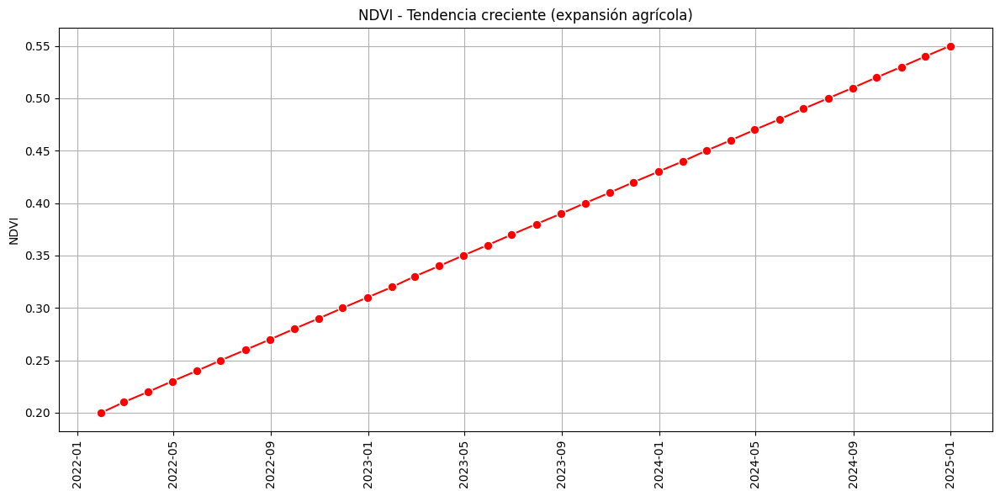
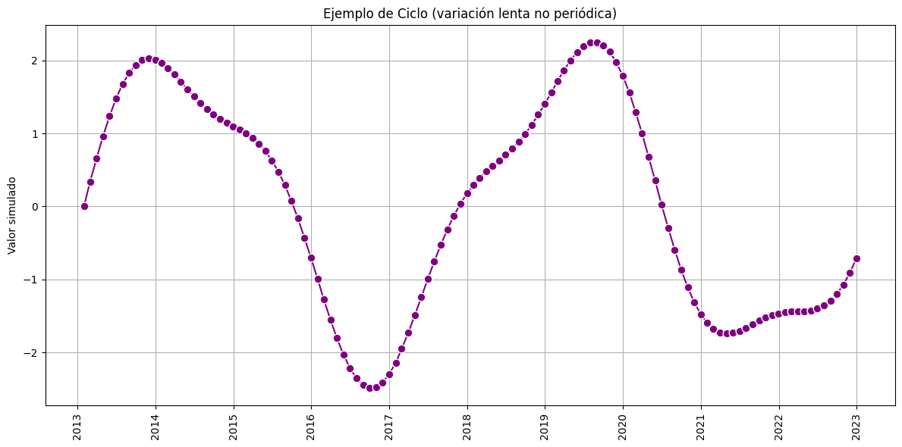
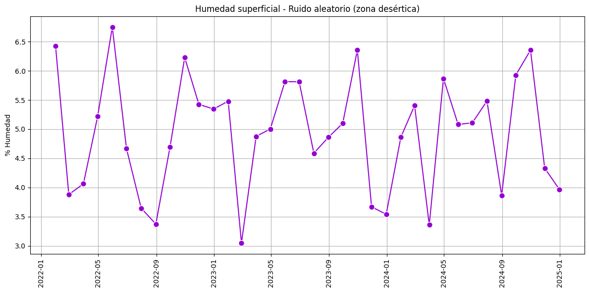
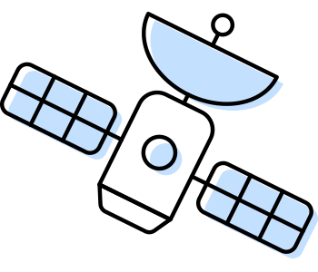
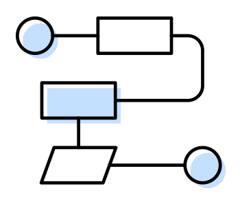

6. Capítulo 6 · Serie Temporales#
En el análisis de datos geoespaciales, las series de tiempo ocupan un lugar central. Ya sea que estudiemos fenómenos terrestres, marítimos o atmosféricos, observar cómo varían en el tiempo ciertas variables nos permite comprender procesos, detectar patrones y anticipar futuros escenarios.
Los científicos de datos trabajan con múltiples formas de representar la información, y una de las más poderosas en aplicaciones de inteligencia artificial aplicada al ambiente es, sin dudas, la serie temporal. Nos ayuda a responder preguntas como: ¿qué está cambiando? ¿cómo? ¿cuándo? y, sobre todo, ¿por qué?
Una serie de tiempo consiste en un conjunto de observaciones de una misma variable recogidas a intervalos regulares. Estos intervalos pueden ser diarios, semanales, mensuales, bimensuales, trimestrales, cuatrimestrales, incluso anuales o multianuales, dependiendo del fenómeno que estemos analizando. No es lo mismo estudiar un evento extremo como una inundación —que requiere una resolución diaria— que seguir el avance de la urbanización, que puede analizarse en escalas mensuales o anuales.
En este primer video vamos a trabajar con un ejemplo concreto y sencillo para introducirnos en el tema: El caso es Bahía Blanca, donde analizamos la evolución mensual durante el año 2024 de una serie de indicadores ambientales derivados de imágenes satelitales Sentinel-2 y MODIS. Calculamos índices como NDVI, NDWI, NDBI, NDMI, NIR y temperatura superficial (LST) (ver en fig-indices) que permiten seguir la dinámica de la vegetación, la presencia de agua, el suelo desnudo, o el impacto del calor. A lo largo del ejemplo, mostramos cómo graficar estas variables, cómo generar las series de tiempo con Google Earth Engine, y cómo exportarlas para su posterior análisis en R o Python.
{kind=link}
Fig. 6.1 Indices espectrales y bandas utilizadas en el estudio.#
Ahora bien, para trabajar de forma sólida con series temporales es importante entender que detrás de cada gráfico hay múltiples componentes interactuando (ver en Fig. 6.2).
{kind=link}
Fig. 6.2 Componentes principales del sistema.#
Por un lado, está la tendencia, ese comportamiento de largo plazo que puede marcar una dirección ascendente o descendente.

También encontramos ciclos, como los que impone el clima o la economía, que pueden repetirse con menor frecuencia pero tener gran impacto.

La estacionalidad, por su parte, nos habla de patrones que se repiten en el mismo periodo cada año: más verdor en primavera, más calor en verano.

Y, por supuesto, el ruido aleatorio, esas pequeñas fluctuaciones impredecibles que también forman parte de la realidad.

¿Cómo se obtuvieron estos ejemplos gráficos? Fue a partir de la generación de datos sintéticos con el siguiente código en Colab: https://colab.research.google.com/drive/1-k8N6c9fhpXcbusPSH_DbJt8TITVkCDw?usp=sharing En el ejemplo se generan gráficos con fondos negro y blanco. El video de este capítulo cuenta con gráficos con fondo negro.
Antes de lanzarse a modelar o predecir, conviene detenerse en un análisis exploratorio. Visualizar la serie en un gráfico —con el tiempo en el eje horizontal y el valor en el eje vertical— ya ofrece una gran cantidad de información. A partir de ahí podemos detectar anomalías, rupturas, variaciones estacionales, o comportamientos inesperados.
Este análisis puede tener distintos niveles de profundidad. Uno descriptivo, que se limita a mostrar lo que ocurre. Otro explicativo, que busca entender por qué ocurre: por ejemplo, una caída brusca del NDWI puede relacionarse con una sequía o con una obra de canalización. Y también uno predictivo, que usa la historia registrada para anticipar lo que podría venir, como un riesgo ambiental o una oportunidad productiva.
Pero para que todo esto funcione, es fundamental tener algunos conceptos claros desde el inicio. Primero, es indispensable conocer el dominio del fenómeno que estamos estudiando: no podemos interpretar una serie de NDVI si no entendemos qué mide ese índice y cómo se comporta en distintos tipos de cobertura, como cultivos, bosques o zonas urbanas. También es clave tener un objetivo bien definido: ¿Queremos monitorear degradación ambiental? ¿Comparar campañas agrícolas? ¿Estudiar procesos de urbanización? Estas decisiones condicionan cómo configuramos nuestra serie: qué resolución temporal elegimos, a qué escala espacial trabajaremos, qué variables o índices vamos a incorporar.
Este video tiene un enfoque introductorio. No busca dar una explicación exhaustiva de todos los componentes técnicos que intervienen en el análisis temporal, sino más bien motivar el uso de las series de tiempo como una herramienta clave en el análisis de información geoespacial con técnicas de inteligencia artificial. Por cuestiones de tiempo, no se abordan en profundidad aspectos como los fundamentos de los índices espectrales o los modelos de series temporales. Por eso, si te interesa avanzar, te recomendamos complementar este material con cursos específicos de teledetección y análisis de series de tiempo, que te brinden una base teórica y metodológica más sólida.
El preprocesamiento también juega un rol clave: a veces hay que rellenar valores faltantes, unificar series con distintas frecuencias, decidir qué hacer con valores extremos, y elegir con cuidado el horizonte temporal según lo que estemos estudiando.
Si el objetivo es predecir, entramos en un terreno más exigente: hay que dividir los datos en un período de entrenamiento y otro de validación, respetando el orden temporal para no introducir sesgos. Aquí aparecen dos grandes caminos: los modelos estadísticos clásicos, como ARIMA, que buscan capturar regularidades estructuradas, y los modelos basados en datos, como las redes neuronales LSTM, que pueden aprender directamente de la complejidad sin necesidad de hacer suposiciones rígidas.
Las series de tiempo son mucho más que líneas en un gráfico. Son herramientas vivas que nos permiten leer el pasado, entender el presente y proyectar el futuro. Aplicadas a la información geoespacial y a la inteligencia artificial, se convierten en aliadas estratégicas para estudiar el mundo cambiante que habitamos. Nos permiten transformar imágenes satelitales en narrativas dinámicas del territorio. Estas herramientas no solo sirven para entender el pasado o describir el presente, sino que son esenciales para anticipar y planificar un futuro más informado y sostenible.
6.1. Serie de Tiempo: Ejemplo Bahía Blanca#
En este laboratorio trabajamos con series temporales aplicadas a imágenes satelitales, tomando como área de estudio el partido de Bahía Blanca en la provincia de Buenos Aires, Argentina. El objetivo es generar indicadores ambientales mensuales o con otra frecuencia a partir de imágenes Sentinel-2 y MODIS, calcular valores promedio sobre una región de interés (ROI: Region of Interest), visualizarlos como gráficos y opcionalmente exportar las estadísticas en formato CSV para análisis externos con R, python o Power BI.
Con este mismo codigo vas a poder calcular series de tiempo con otras frecuencias.
6.2. Definición de la frecuencia de análisis temporal#
var frecuencia = 'mensual';
Este parámetro define cada cuánto tiempo se va a tomar una imagen compuesta: puede ser mensual, bimestral, trimestral o cuatrimestral. Esto permite adaptar el análisis a diferentes necesidades: monitoreo fino o más general.
var mesesPorPaso = {
'mensual': 1,
'bimestral': 2,
'trimestral': 3,
'cuatrimestral': 4
};
var paso = mesesPorPaso[frecuencia];
A continuación se define cuántos meses tiene cada intervalo (paso) según la frecuencia elegida. Este valor será clave para generar las fechas y los períodos de análisis.
var fechas = ee.List.sequence(0, 11, paso).map(function(mes) {
return ee.Date('2024-01-01').advance(mes, 'month');
});
Se crea una lista de fechas iniciales, empezando el 1 de enero de 2024 y avanzando de paso en paso. Por ejemplo, si paso = 2, las fechas serán enero, marzo, mayo, etc.
6.3. Región de interés (ROI)#
En el siguiente código:
var admin2 = ee.FeatureCollection("FAO/GAUL/2015/level2")
.filter(ee.Filter.eq('ADM0_NAME', 'Argentina'))
.filter(ee.Filter.eq('ADM1_NAME', 'Buenos Aires'));
var bahiaBlanca = admin2.filter(ee.Filter.eq('ADM2_NAME', 'Bahia Blanca'));
var roi2 = bahiaBlanca.geometry().simplify(100);
se define la región de interés: el polígono de Bahía Blanca. Se simplifica la geometría para que sea más eficiente computacionalmente.
Map.centerObject(roi2, 8);
Map.addLayer(roi2, {color: 'red'}, 'Bahía Blanca');
Se centra el mapa en la región de estudio y se visualiza.
6.4. Función para agregar índices a cada imagen#
function agregarIndices(img) {
var ndvi = img.normalizedDifference(['B8', 'B4']).rename('NDVI');
var ndbi = img.normalizedDifference(['B11', 'B8']).rename('NDBI');
var ndwi = img.normalizedDifference(['B3', 'B8']).rename('NDWI');
var ndmi = img.normalizedDifference(['B3', 'B11']).rename('NDMI');
var nir = img.select('B8').divide(10000).rename('NIR');
return img.addBands([ndvi, ndbi, ndwi, ndmi, nir]);
}
Esta función calcula distintos índices espectrales (NDVI, NDBI, NDWI, NDMI) y NIR, y agrega esos nuevos bandas derivadas a la imagen original. Esto facilita su análisis posterior.
6.5. Función clave: getColeccionPorPeriodo#
function getColeccionPorPeriodo(fecha) {
fecha = ee.Date(fecha);
var fin = fecha.advance(paso, 'month');
Recibe una fecha de inicio, y calcula la fecha de fin del periodo, avanzando paso meses.
var coleccion = ee.ImageCollection('COPERNICUS/S2_SR_HARMONIZED')
.filterBounds(roi2)
.filterDate(fecha, fin)
.filter(ee.Filter.lt('CLOUDY_PIXEL_PERCENTAGE', 20))
Filtra la colección Sentinel-2: • Solo imágenes dentro de la ROI. • Solo dentro del rango de fechas definido. • Solo imágenes con menos del 20% de nubes.
.map(function(img) {
return agregarIndices(img.clip(roi2).set('system:time_start', img.date().millis()));
});
A cada imagen del periodo: • Se la recorta a la ROI. • Se le calculan los índices. • Se le asigna el campo system:time_start para graficar luego.
return coleccion.mean().set('system:time_start', fecha.millis());
}
Devuelve una única imagen compuesta promedio de ese periodo, con fecha de inicio del bloque temporal.
6.6. Crear la colección temporal#
var final = ee.ImageCollection.fromImages(fechas.map(getColeccionPorPeriodo));
Aplica getColeccionPorPeriodo a cada fecha de inicio. El resultado es una serie de imágenes promedio por período, listas para graficar.
6.7. Gráfico de índices Sentinel-2#
var chart = ui.Chart.image.series({
imageCollection: final.select(['NDVI', 'NDBI', 'NDWI', 'NDMI', 'NIR']),
region: roi2,
reducer: ee.Reducer.mean(),
scale: 200,
xProperty: 'system:time_start'
})
Se crea una serie temporal multivariable, extrayendo el valor promedio de cada índice en la ROI para cada imagen compuesta.
.setChartType('LineChart')
.setOptions({
title: 'Serie temporal con índices Sentinel-2 y VV Sentinel-1',
hAxis: {title: 'Fecha'},
vAxis: {title: 'Valor promedio'},
lineWidth: 2,
pointSize: 4
});
Configuración estética del gráfico (ver Figura Fig. 6.3).
{kind=link}
Fig. 6.3 Serie temporal: valores promedio de NDVI, NDBI, NDWI, NDMI, NIR para el partido de Bahía Blanca, año 2024.#
6.8. Serie temporal de temperatura superficial (LST)#
var modisLST = ee.ImageCollection("MODIS/061/MOD11A2")
.filterBounds(roi2)
.filterDate('2024-01-01', '2024-12-15')
.map(function(img) {
var lst = img.select('LST_Day_1km')
.multiply(0.02)
.subtract(273.15)
.rename('LST')
.clip(roi2);
return lst.copyProperties(img, img.propertyNames());
});
Se obtiene la temperatura superficial de MODIS, se convierte de Kelvin a Celsius (°C) y se recorta a la ROI.
var lstChart = ui.Chart.image.series({
imageCollection: modisLST,
region: roi2,
reducer: ee.Reducer.mean(),
scale: 1000,
xProperty: 'system:time_start'
})
Genera un gráfico de temperatura superficial promedio (ver Figura Fig. 6.4).
{kind=link}
Fig. 6.4 Figura generada en GEE de la serie temporal de temperatura promedio para el partido de Bahía Blanca#
6.9. Exportación opcional de estadísticas a CSV#
Exportar los conjuntos de datos a csv es una buena opción para procesamiento posterior en lenguajes como R, python, julia o Power BI.
{kind=link}
Fig. 6.5 Exportación de archivos CSV de GEE a python, R y Power BI.#
a) Para Sentinel-2:
Esto exporta una tabla con una fila por período, conteniendo los valores promedio de NDVI, NDBI, etc.
// var statsSentinel = imagenesPorPeriodo.map(function(img) {
Debe usarse la colección final en lugar de imagenesPorPeriodo:
var statsSentinel = final.map(function(img) {
var reducer = img.reduceRegion({
reducer: ee.Reducer.mean(),
geometry: roi2,
scale: 60,
maxPixels: 1e8
});
return ee.Feature(null, reducer).set('fecha', img.date().format('YYYY-MM-dd'));
});
Export.table.toDrive({
collection: statsSentinel,
description: 'sentinel_indices_roi',
fileFormat: 'CSV'
});
b) Para MODIS LST:
De forma similar, se genera una tabla con una fila por imagen de MODIS, con el valor de temperatura superficial promedio.
var statsLST = modisLST.map(function(img) {
var reducer = img.reduceRegion({
reducer: ee.Reducer.mean(),
geometry: roi2,
scale: 1000,
maxPixels: 1e8
});
return ee.Feature(null, reducer).set('fecha', img.date().format('YYYY-MM-dd'));
});
Export.table.toDrive({
collection: statsLST,
description: 'serie_LST_BahiaBlanca',
fileFormat: 'CSV'
});
6.10. Conclusión de la sección#
La Figura Fig. 6.6 muestra algunas conclusiones de la sección:
{kind=link}
Fig. 6.6 Algunas Conclusiones de la sección#
6.11. Uso de Awesome Spectral Indices en GEE#
En este video vamos a explorar cómo usar el catálogo abierto y colaborativo de índices espectrales denominado Awesome Spectral Indices (ASI), una herramienta muy potente para calcular de forma sencilla decenas de índices espectrales en Google Earth Engine.
Esta librería nos ahorra tiempo y evita errores al aplicar fórmulas, ya que contiene una base de datos bien documentada con cada índice, su fórmula, sus bandas requeridas y su referencia académica.
{kind=link}
Fig. 6.7 ïcono de la librería Spectral que implementa ASI en JS#
6.11.1. ¿Cómo funciona? – Importar el módulo#
Lo primero que tenemos que hacer es aceptar el módulo desde el repositorio del autor. Una vez aceptado, lo cargamos con el siguiente comando:
var spectral = require("users/dmlmont/spectral:spectral");
Esto nos habilita todas las funciones y estructuras que forman parte del paquete.
6.11.2. Ver la lista completa de índices#
Podemos listar todos los índices disponibles simplemente con:
print(spectral.indices);
En la consola vamos a ver un diccionario grande, donde cada clave es el nombre corto del índice: como NDVI, EVI, NDWI, NDBI, SAVI, entre muchos otros.
6.11.3. Acceder a la información de un índice específico#
Supongamos que queremos saber más sobre el NDVI. Tenemos dos formas equivalentes de hacerlo:
print(spectral.indices.NDVI);
print(spectral.indices["NDVI"]);
En ambos casos se nos despliega toda la información asociada a ese índice.
6.11.4. Explorar los atributos del índice#
Los atributos disponibles para cada índice incluyen:
short_name: el nombre corto (por ejemplo “NDVI”).
long_name: el nombre largo (como “Normalized Difference Vegetation Index”).
formula: la fórmula que se utiliza para calcularlo.
bands: las bandas que requiere (por ejemplo, “N” y “R”).
reference: el link al paper o DOI original.
type: el tipo o dominio de aplicación (vegetación, agua, suelo, etc.).
date_of_addition: la fecha en que fue agregado a la lista.
contributor: el enlace al usuario de GitHub que lo subió.
Por ejemplo, si queremos ver únicamente la fórmula del NDVI, utilizamos esta instrucción:
print(spectral.indices.NDVI.formula);
O bien:
print(spectral.indices.NDVI["formula"]);
6.11.5. Calcular un índice: NDVI sobre una imagen Sentinel-2#
Ahora vamos a calcular un índice real sobre una imagen de Sentinel-2.
var dataset = "COPERNICUS/S2_SR";
var S2 = ee.ImageCollection(dataset).first();
var S2 = spectral.scale(S2, dataset);
Lo primero que hacemos es seleccionar una imagen y escalarla usando la función spectral.scale, que ajusta las bandas correctamente. Luego definimos los parámetros necesarios para el NDVI:
var parameters = {
"N": S2.select("B8"), // Banda del infrarrojo cercano
"R": S2.select("B4") // Banda del rojo
};
Finalmente, aplicamos el cálculo del índice:
var S2 = spectral.computeIndex(S2, "NDVI", parameters);
Esto agrega una nueva banda llamada NDVI a la imagen. Podemos verificarlo mostrando la imagen por consola:
print("Imagen con NDVI:", S2);
En la consola, dentro de la pestaña bands, vamos a ver que además de las bandas originales, ahora tenemos una nueva banda NDVI, calculada automáticamente.
6.11.6. Calcular múltiples índices a la vez#
También podemos calcular varios índices simultáneamente:
var parameters = {
"N": S2.select("B8"),
"R": S2.select("B4"),
"G": S2.select("B3"),
"L": 0.5
};
var S2 = spectral.computeIndex(S2, ["NDVI", "GNDVI", "SAVI"], parameters);
Nuevamente, si imprimimos la imagen:
print("Imagen con varios índices:", S2);
En la consola vamos a ver que ahora tenemos nuevas bandas: NDVI, GNDVI y SAVI, todas calculadas en una sola línea de código.
6.11.7. Mostrar el resultado en el visor de GEE#
Podemos agregar cualquiera de estos índices al mapa. Por ejemplo:
Map.centerObject(S2, 9);
Map.addLayer(S2.select("NDVI"), {min: 0, max: 1, palette: ["white", "green"]}, "NDVI");
Así podemos ver visualmente el resultado del índice espectral calculado con Awesome Spectral Indices.
Como vimos Awesome Spectral Indices (ASI) facilita mucho el trabajo con índices en GEE. No solo nos permite acceder a una base de datos curada y documentada de fórmulas, sino que también simplifica su cálculo, evita errores y permite hacer análisis espectrales complejos con muy pocas líneas de código. Si trabajás con teledetección, ¡esta herramienta es realmente imprescindible!.
ASI no solo esta disponible en GEE para JS, sino tambien en lenguaje python, R y Julia. Ademas en su repositorio oficial de github (awesome-spectral-indices/awesome-spectral-indices) ofrece un completo catalago de indices clasificado por dominio de aplicación como : vegetación, agua, fuego, nieve, urbano, suelo, kernel y radar. Cada indice incluye la fórmula, el dominio temático y también la compatibilidad, es decir con qué sensores se pueden aplicar cada uno de estos indices, incluyendo: MODIS, Landsat, Sentinel-2 y planet fusion.
6.12. Explicación de la nueva versión con ASI#
Para cerrar este capítulo mostraremos una mejora en la función agregarIndices, ahora usando la librería Awesome Spectral Indices (ASI). Realizamos una copia del script anterior y lo denominamos Lab_006_TS_BahiaBlanca_BIS
Comentamos la función agregarIndices anterior, para volver a definirla utilizando Awesome Spectral Indices. Lo primero que hacemos es importar la librería desde el repositorio público:
var spectral = require("users/dmlmont/spectral:spectral");
Luego, definimos la función agregarIndices, donde pedimos que se calculen automáticamente los índices NDVI, NDBI, NDWI y NDMI:
var indices = ['NDVI', 'NDBI', 'NDWI', 'NDMI'];
Para que ASI entienda correctamente qué bandas usar, le tenemos que pasar un objeto con los parámetros necesarios. Por ejemplo:
N representa el infrarrojo cercano, la banda B8.
R es el rojo, la banda B4.
G es el verde, la banda B3.
S1 es el SWIR1, la banda B11.
var parametros = {
N: img.select('B8'),
S1: img.select('B11'),
G: img.select('B3'),
R: img.select('B4')
};
Con eso, ASI puede interpretar correctamente las fórmulas internas de cada índice y calcularlos todos de forma automática con una sola línea:
var conIndices = spectral.computeIndex(img, indices, parametros);
Finalmente, como en la versión anterior, agregamos la banda NIR escalada dividiendo la B8 por 10.000:
var nir = img.select('B8').divide(10000).rename('NIR');
Y retornamos la imagen con todos los índices calculados:
return conIndices.addBands(nir);
Esta versión es más ordenada, más mantenible, y nos permite reutilizar fácilmente la función para otros índices o sensores si lo necesitamos más adelante.
6.13. Cierre#
Google Earth Engine combina un catálogo de imágenes satelitales y conjuntos de datos geoespaciales de varios petabytes con capacidades de análisis a escala planetaria. Científicos, investigadores y desarrolladores utilizan Earth Engine para detectar cambios, mapear tendencias y cuantificar diferencias en la superficie terrestre. Earth Engine ahora está disponible para uso comercial y sigue siendo gratuito para fines académicos y de investigación.
“Imágenes satelitales + tus algoritmos + aplicaciones en el mundo real” es una fórmula que resume el potencial de Google Earth Engine (GEE) para generar soluciones científicas y prácticas.

Imágenes satelitales: GEE brinda acceso inmediato a un vasto catálogo de imágenes de observación de la Tierra, que incluye datos de sensores como Landsat, Sentinel, MODIS, entre otros. Esto permite monitorear cambios en el planeta en escalas temporales y espaciales diversas.

Tus algoritmos: Los usuarios pueden aplicar sus propios modelos de análisis, ya sean simples cálculos de índices espectrales o complejos algoritmos de machine learning, todo dentro del entorno de GEE, aprovechando su capacidad de procesamiento en la nube.
Aplicaciones en el mundo real: Al combinar datos y algoritmos, es posible desarrollar soluciones para problemas concretos como la deforestación, el cambio climático, la planificación urbana, la gestión del agua, la agricultura de precisión y muchos más.
En conjunto, ¡esta fórmula representa cómo GEE empodera a los científicos, desarrolladores y tomadores de decisiones para transformar datos en conocimiento y acción!.
En el próximo capítulo de esta serie Time Series, calcularemos mas series temporales de precipitaciones, y obtendremos una serie etemporal de tipos de suelo de Rosario utilizando el clasificador de Random Forest de un video anterior. Nos enfocaremos en ver esos ejemplos en el marco de la teoría de cubos de datos de Imágenes Satelitales.
6.14. Video del capítulo#
Podes mirar el video asociado a este capítulo en el canal de youtube de IDERA: https://www.youtube.com/watch?v=1hrdqhz78SU